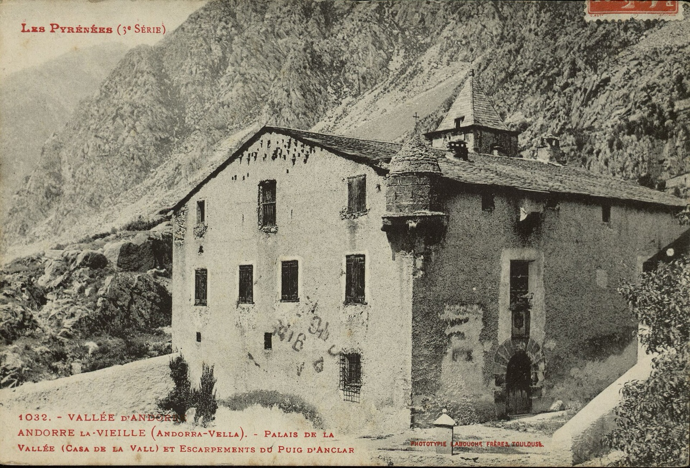
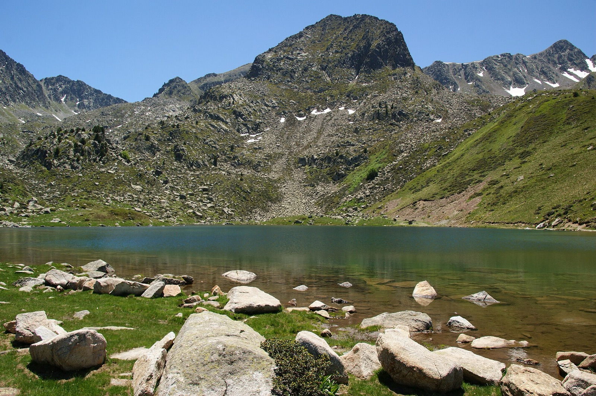
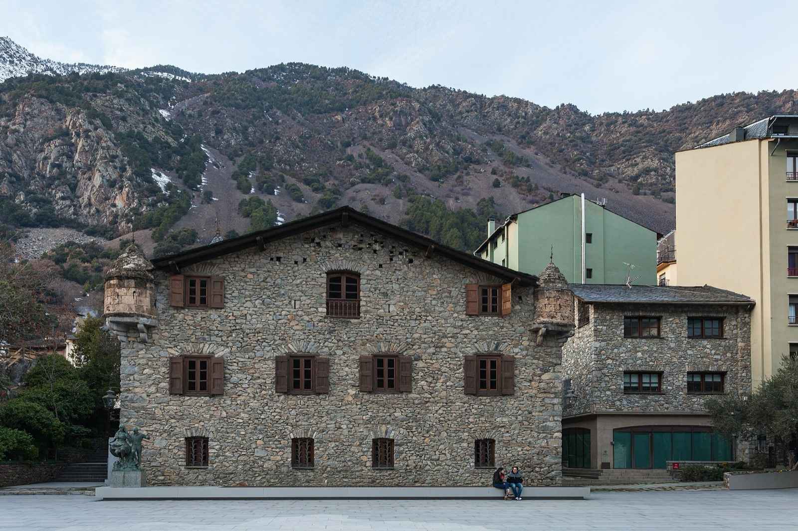

71.4 %
Who knows most
Each bar is a model and measures the share of questions it gets right: 100 % would be the summit of Coma Pedrosa, 2,942 m. Hover a bar to see its 95 % confidence interval; if two intervals overlap, there is no clear winner. Pick a topic to rank the models by it.43 models evaluated, 43 with all 926 questions scored: multiple choice automatically, open and trap questions by the judge (Gemini 3.8 Flash, in batch). Gemini 3.8 Flash is also the judge, so its open and trap scores may be inflated. An empty answer counts as wrong.
The table, model by model
GPT-6.1 Sol71.4 %Complete
OpenAI · closed · API
Multiple choice 85.4 % (604) · Open 42.2 % (231) · Traps 52.8 % (91)
Gemini 3.1 Pro67.7 %Complete
Google · closed · API
Multiple choice 82.1 % (604) · Open 41.1 % (231) · Traps 39.6 % (91)
Gemini 4 Argon67.5 %Complete
Google · closed · API
Multiple choice 81.3 % (604) · Open 39.8 % (231) · Traps 46.7 % (91)
Gemini 3.8 Flash67.3 %Complete
Google · closed · API · also the judge
Multiple choice 82.1 % (604) · Open 42.2 % (231) · Traps 33.0 % (91)
Gemini 3.7 Flash66.3 %Complete
Google · closed · API
Multiple choice 81.6 % (604) · Open 41.8 % (231) · Traps 26.9 % (91)
Gemini 3.5 Flash65.6 %Complete
Google · closed · API
Multiple choice 80.6 % (604) · Open 40.3 % (231) · Traps 30.2 % (91)
Claude Opus 5.565.1 %Complete
Anthropic · closed · API
Multiple choice 79.6 % (604) · Open 31.4 % (231) · Traps 54.4 % (91)
Gemini 3 Flash64.5 %Complete
Google · closed · API
Multiple choice 79.8 % (604) · Open 39.0 % (231) · Traps 27.5 % (91)
Gemini 3.6 Flash64.5 %Complete
Google · closed · API
Multiple choice 79.1 % (604) · Open 39.8 % (231) · Traps 29.7 % (91)
GPT-6.1 Terra62.8 %Complete
OpenAI · closed · API
Multiple choice 77.1 % (604) · Open 34.4 % (231) · Traps 40.1 % (91)
GPT-6 Luna60.3 %Complete
OpenAI · closed · API
Multiple choice 75.8 % (604) · Open 32.9 % (231) · Traps 26.4 % (91)
DeepSeek V4.1 Flash 101756.3 %Complete
DeepSeek · open · Ollama Cloud
Multiple choice 72.0 % (604) · Open 27.9 % (231) · Traps 23.6 % (91)
DeepSeek V4 Pro55.9 %Complete
DeepSeek · open · Ollama Cloud
Multiple choice 73.5 % (604) · Open 27.5 % (231) · Traps 11.0 % (91)
Kimi K355.5 %Complete
Moonshot · open · Ollama Cloud
Multiple choice 70.0 % (604) · Open 29.4 % (231) · Traps 24.7 % (91)
DeepSeek V4.1 Flash55.4 %Complete
DeepSeek · open · Ollama Cloud
Multiple choice 69.7 % (604) · Open 30.5 % (231) · Traps 23.6 % (91)
Grok 4.754.3 %Complete
xAI · closed · API
Multiple choice 68.7 % (604) · Open 27.1 % (231) · Traps 28.0 % (91)
GLM 5.252.4 %Complete
Z.ai · open · Ollama Cloud
Multiple choice 69.7 % (604) · Open 22.9 % (231) · Traps 12.1 % (91)
Gemini 3.1 Flash-Lite52.4 %Complete
Google · closed · API
Multiple choice 67.9 % (604) · Open 26.2 % (231) · Traps 15.9 % (91)
GLM 5.3 Flash52.2 %Complete
Z.ai · open · Ollama Cloud
Multiple choice 66.2 % (604) · Open 27.7 % (231) · Traps 20.9 % (91)
Beam49.6 %Complete
open · Ollama Cloud
Multiple choice 66.1 % (604) · Open 19.9 % (231) · Traps 15.9 % (91)
Gemini 3.5 Flash-Lite48.9 %Complete
Google · closed · API
Multiple choice 62.4 % (604) · Open 25.3 % (231) · Traps 19.2 % (91)
GLM 5.348.8 %Complete
Z.ai · open · Ollama Cloud
Multiple choice 63.4 % (604) · Open 22.7 % (231) · Traps 18.1 % (91)
Nemotron 3 Ultra48.3 %Complete
NVIDIA · open · Ollama Cloud
Multiple choice 65.7 % (604) · Open 18.0 % (231) · Traps 9.9 % (91)
Qwen 3.8 Flash48.2 %Complete
Alibaba · closed · API
Multiple choice 64.7 % (604) · Open 17.8 % (231) · Traps 15.9 % (91)
Claude Sonnet 5.546.7 %Complete
Anthropic · closed · API
Multiple choice 59.1 % (604) · Open 18.2 % (231) · Traps 36.8 % (91)
Kimi K2.646.4 %Complete
Moonshot · open · Ollama Cloud
Multiple choice 61.9 % (604) · Open 18.2 % (231) · Traps 15.4 % (91)
Mistral Large 444.4 %Complete
Mistral · open · Ollama Cloud
Multiple choice 61.1 % (604) · Open 16.7 % (231) · Traps 4.4 % (91)
Claude Haiku 5.543.5 %Complete
Anthropic · closed · API
Multiple choice 57.0 % (604) · Open 14.5 % (231) · Traps 27.5 % (91)
Grok 4.2041.2 %Complete
xAI · closed · API
Multiple choice 54.3 % (604) · Open 17.1 % (231) · Traps 15.4 % (91)
Gemma 4 31B41.1 %Complete
Google · open · Ollama Cloud
Multiple choice 56.1 % (604) · Open 14.7 % (231) · Traps 8.8 % (91)
Nemotron 3 Super38.8 %Complete
NVIDIA · open · Ollama Cloud
Multiple choice 54.0 % (604) · Open 13.2 % (231) · Traps 2.8 % (91)
Gemma 4 12B37.4 %Complete
Google · open · local
Multiple choice 51.5 % (604) · Open 13.0 % (231) · Traps 6.0 % (91)
gpt-oss 120B35.8 %Complete
OpenAI · open · Ollama Cloud
Multiple choice 49.7 % (604) · Open 11.3 % (231) · Traps 5.5 % (91)
Gemma 4 26B-A4B35.1 %Complete
Google · open · Vertex
Multiple choice 47.5 % (604) · Open 12.1 % (231) · Traps 11.0 % (91)
maia E4B32.9 %Complete
maia project · open · Gemma 4 E4B fine-tuned on Andorra
Multiple choice 46.2 % (604) · Open 9.3 % (231) · Traps 5.0 % (91)
MiniMax M331.9 %Complete
MiniMax · open · Ollama Cloud
Multiple choice 45.7 % (604) · Open 6.7 % (231) · Traps 3.9 % (91)
Gemma 3 27B31.5 %Complete
Google · open · local
Multiple choice 44.7 % (604) · Open 8.9 % (231) · Traps 1.7 % (91)
MiniMax M3.1 Flash31.2 %Complete
MiniMax · open · Ollama Cloud
Multiple choice 45.5 % (604) · Open 4.8 % (231) · Traps 2.8 % (91)
Gemma 4 E4B30.3 %Complete
Google · open · local
Multiple choice 42.4 % (604) · Open 9.1 % (231) · Traps 3.9 % (91)
Gemma 3 12B30.1 %Complete
Google · open · local
Multiple choice 43.4 % (604) · Open 6.5 % (231) · Traps 1.7 % (91)
gpt-oss 20B28.8 %Complete
OpenAI · open · Ollama Cloud
Multiple choice 41.4 % (604) · Open 6.3 % (231) · Traps 2.8 % (91)
Gemma 4 E2B25.7 %Complete
Google · open · local
Multiple choice 38.1 % (604) · Open 3.0 % (231) · Traps 0.5 % (91)
Gemma 3 4B25.2 %Complete
Google · open · local
Multiple choice 36.6 % (604) · Open 4.3 % (231) · Traps 2.2 % (91)
Dataset v1-draft (923388fb2690) · judge Gemini 3.8 Flash · generated on 2026-11-03.
Success case: maia
maia is this project's own model: Gemma 4 E4B fine-tuned with QLoRA on a single GPU, on 28,679 conversations in Andorran Catalan, including 830 verified facts asked in many different ways. It is scored exactly like every other model. Model · training data
Read it carefully: the benchmark gain is not statistically significant yet, because the benchmark deliberately asks about facts that never enter training. Fine-tuning shows where it should: in remembering the facts it was taught.
Where they hit and miss
The big figure is the chosen model's score in each domain. The small bars are every model with all tests scored, in ranking order; the yellow one is the chosen model. Hover a bar to see which model it is. Darkened: where the chosen model fails most.
History
73.3 %131 questions · Best: Gemini 4 Argon, 74.8 %
Institutions
65.6 %109 questions · Best: GPT-6.1 Sol, 65.6 %
Society
71.7 %120 questions · Best: GPT-6.1 Sol, 71.7 %
Language
71.5 %86 questions · Best: GPT-6.1 Sol, 71.5 %
Economy
65.7 %83 questions · Best: GPT-6.1 Sol, 65.7 %
Culture
75.0 %82 questions · Best: GPT-6.1 Sol, 75.0 %
Sport
75.0 %76 questions · Best: Gemini 3.1 Pro, 75.7 %
Territory
73.6 %70 questions · Best: GPT-6.1 Sol, 73.6 %
Customs
67.9 %53 questions · Best: GPT-6.1 Sol, 67.9 %
Politics
79.0 %38 questions · Best: Gemini 3.7 Flash, 82.9 %
Food
62.9 %35 questions · Best: Gemini 3.7 Flash, 71.4 %
Daily life
79.7 %32 questions · Best: GPT-6.1 Sol, 79.7 %
People
77.3 %11 questions · Best: GPT-6.1 Sol, 77.3 %

Try it
Question
Loading a question…
How each answer is scored
First, four options and one right answer. The model gives a letter and it is marked automatically.
Then, free answers. The judge compares them with the reference: 0, 1 or 2 points.
Finally, a false premise. Only a model that rejects it scores.
Where questions come from
Each question comes from an article about Andorra, carries a context written in our own words and was checked against the original. The questions are in Catalan, Andorra's official language.

General models can name the capital. What we measure is everything behind it: the pareatges, the parishes, the festivals, the smuggling, the language, the people.
Questions and answers

How do I evaluate my model?
Clone the repository and run python3 tools/run.py --model ollama:your-model. It works with Ollama, Ollama Cloud, OpenAI, Anthropic, OpenRouter and Vertex. Then run python3 tools/score.py results/<name> and python3 tools/web.py.
What does the model see?
Only the question, plus the four options if it is multiple choice. Never the context or the reference answer. The same prompt and temperature 0 for everyone.
Who scores the open answers?
A fixed judge, Gemini 3.8 Flash, with the reference answer, the key facts and a list of errors to penalise. An answer containing one of those errors cannot get full marks.
Is the judge impartial?
Not entirely: a judge only catches the errors it knows. That is why each question carries its typical errors. When the model being evaluated is the judge itself, the table says so.
What is a trap question?
A question that takes a false fact for granted. A model scores if it rejects it and says what is true; one that makes up an explanation gets zero.
What are unseen questions?
Questions about 41 reserved records that never enter maia's training. They measure whether a model makes up what it does not know.
Why is there an interval?
Because the questions are a sample. The interval comes from resampling them a thousand times. Two scores whose intervals overlap cannot be ranked.
Why do only multiple-choice questions count for now?
Open and trap questions are scored by the judge, and that pass has not run yet. Once it does, the score will cover all 926 questions.
Does maia have an advantage?
maia is the model of the project that built the benchmark. That is why the method, the questions and the code are public, and the table flags it.
Does it also measure how a model speaks?
Not yet. The language part (perplexity on real speech, a dialect test and a blind test with Andorrans) is under construction.